A progress report on Visualize Karhutla, the open project that maps Kalimantan’s 2026 forest and land fires.
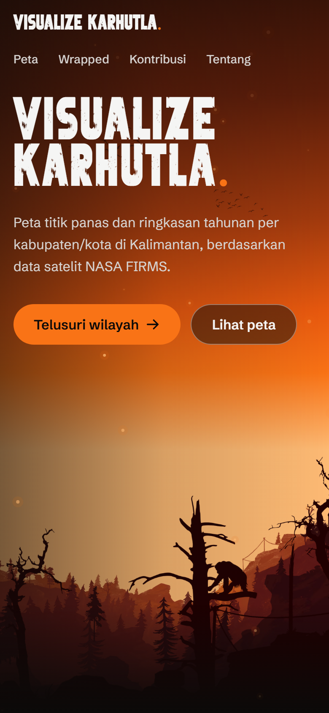
fire hotspots detected in Kalimantan, 1 January to 12 October 2026.
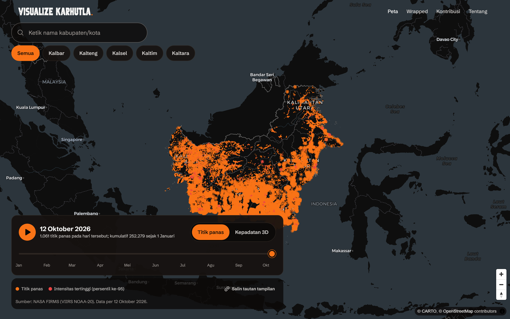
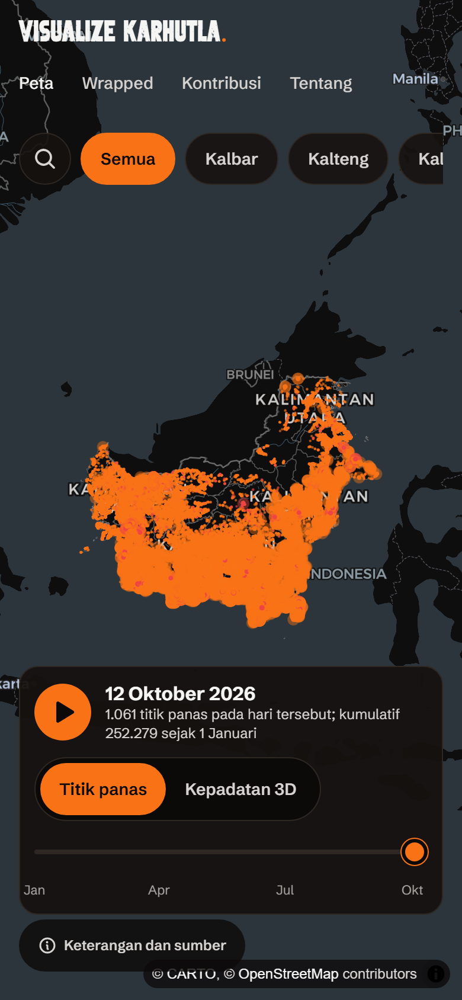
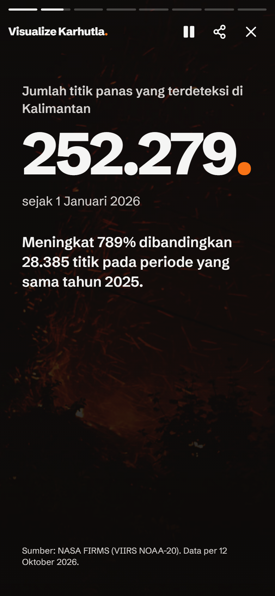
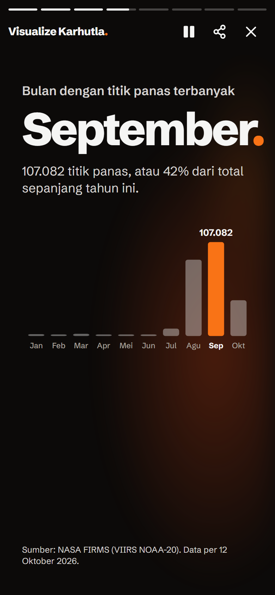
8 screens per regency, plus one for all of Kalimantan.
Share any screen as a 1080×1920 image, or a landscape summary for X and Threads.
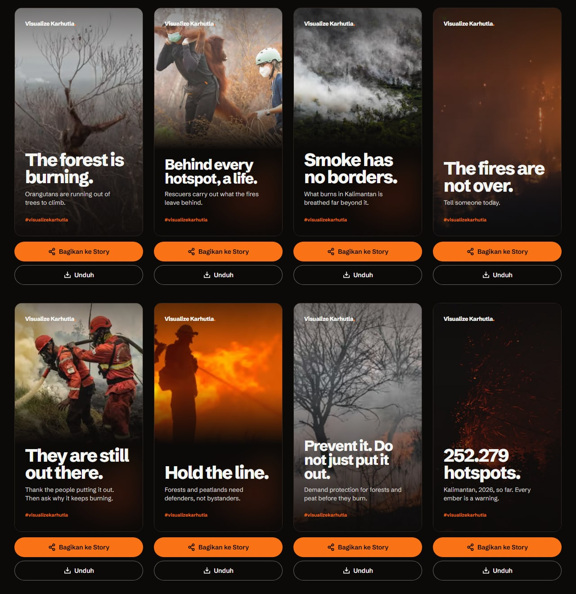
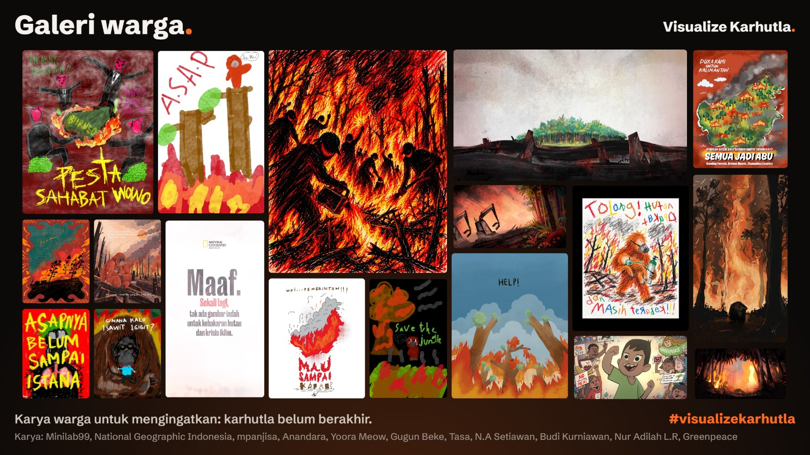
Submit via a GitHub form or DM. Every entry is reviewed, then published automatically. The gallery can be shared as a mosaic image or a scrolling Story video.
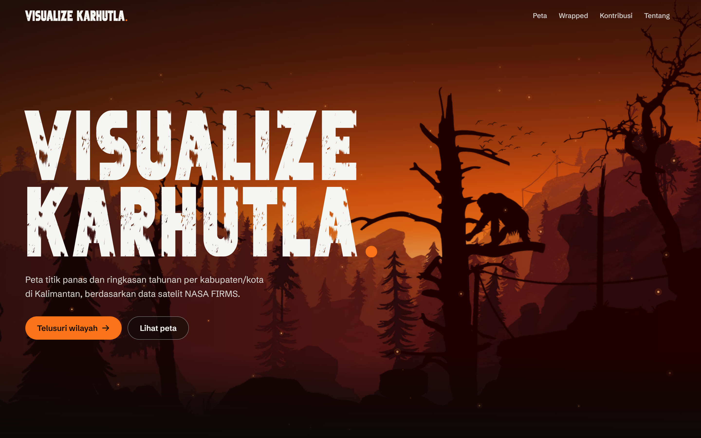
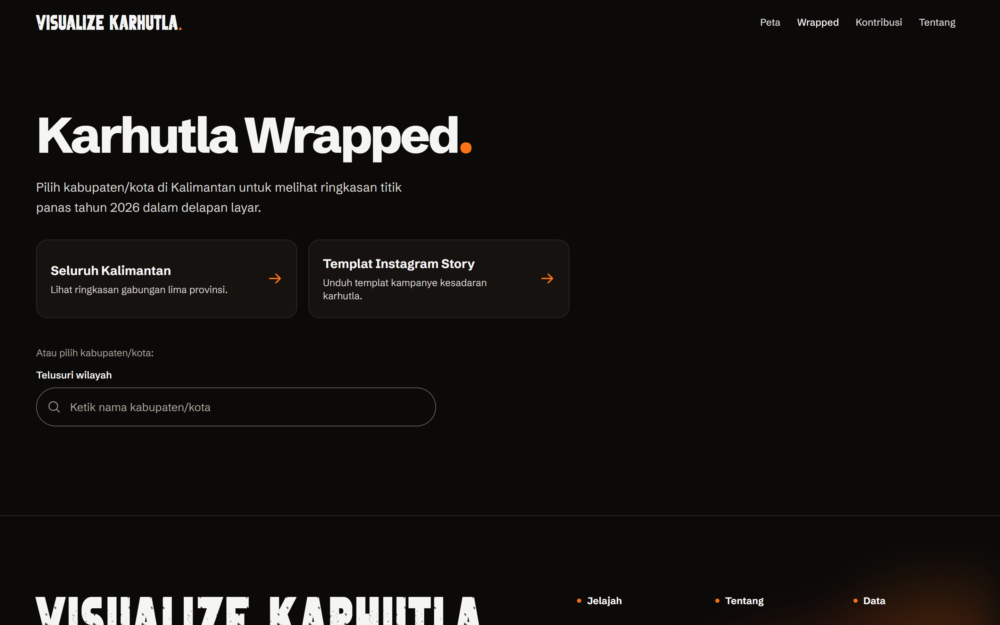
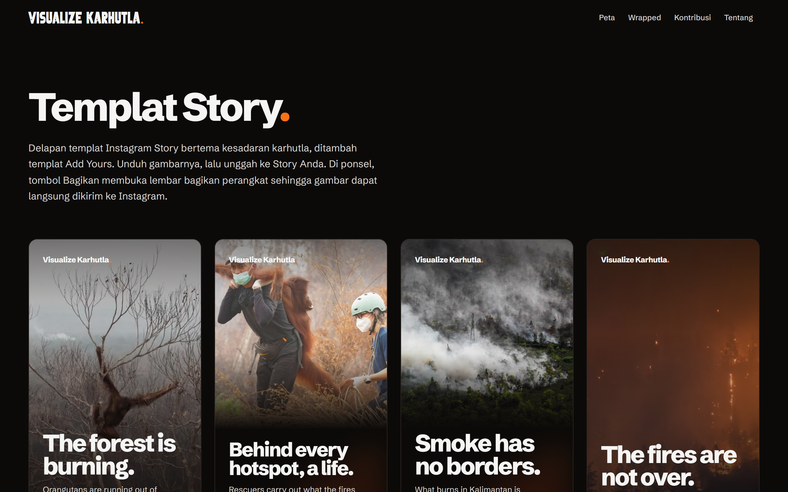
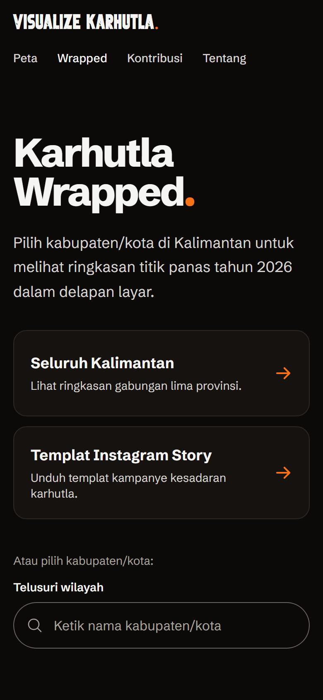
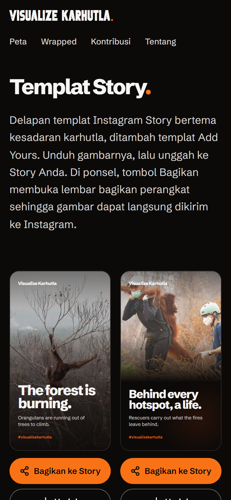
Daily automatic data refresh so the map never goes stale.
Burned area per regency (today: province level, from news reports).
More years of history for context beyond 2025.
A faster map on slow phones (lighter hotspot data).
Automated tests for pages and share images, and an English version.
Data: burned-area figures, local reports, corrections. Assets: illustrations, photos, designs. Also: articles, code, translation.